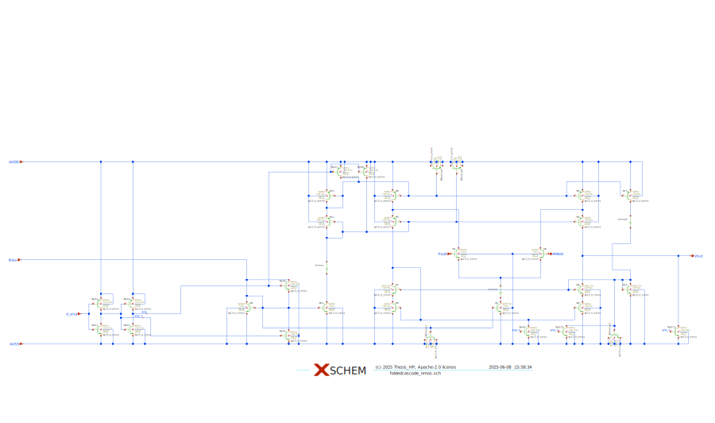
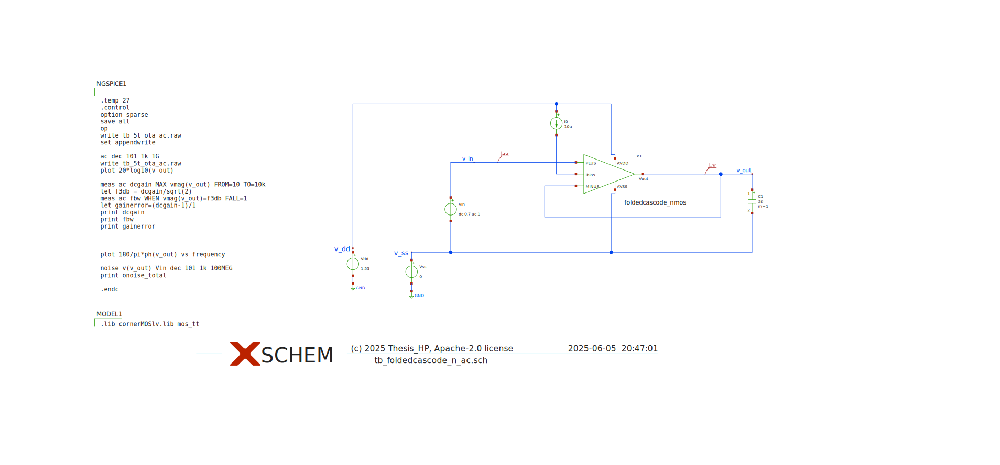
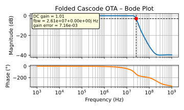
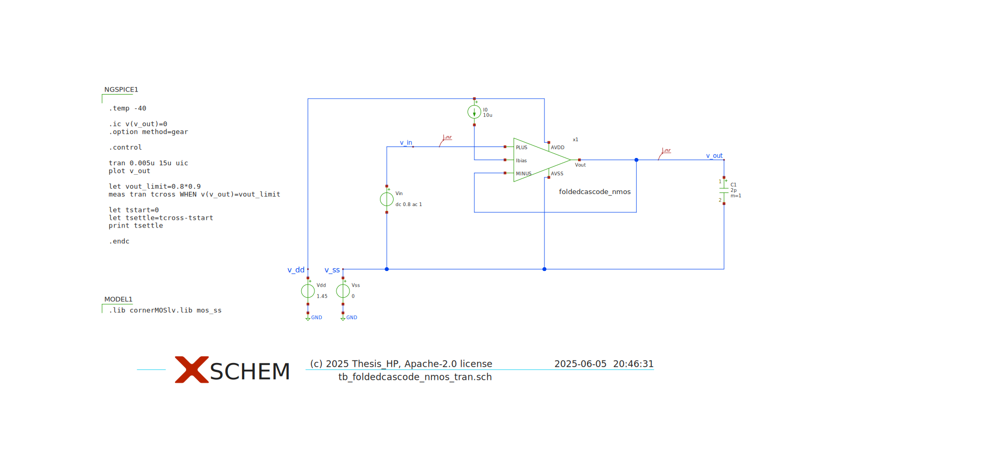
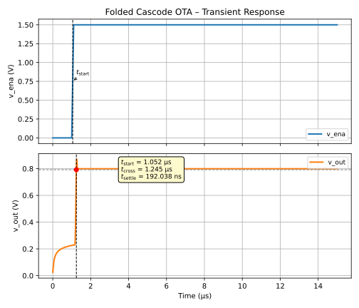
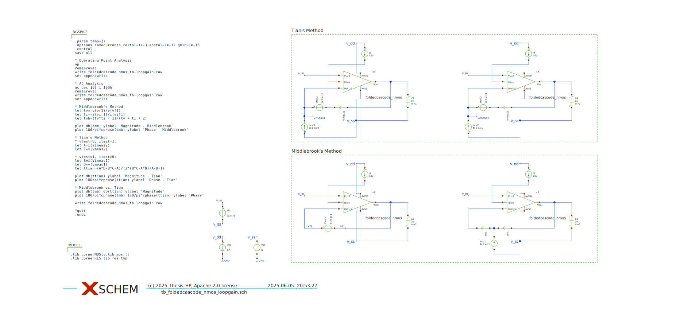
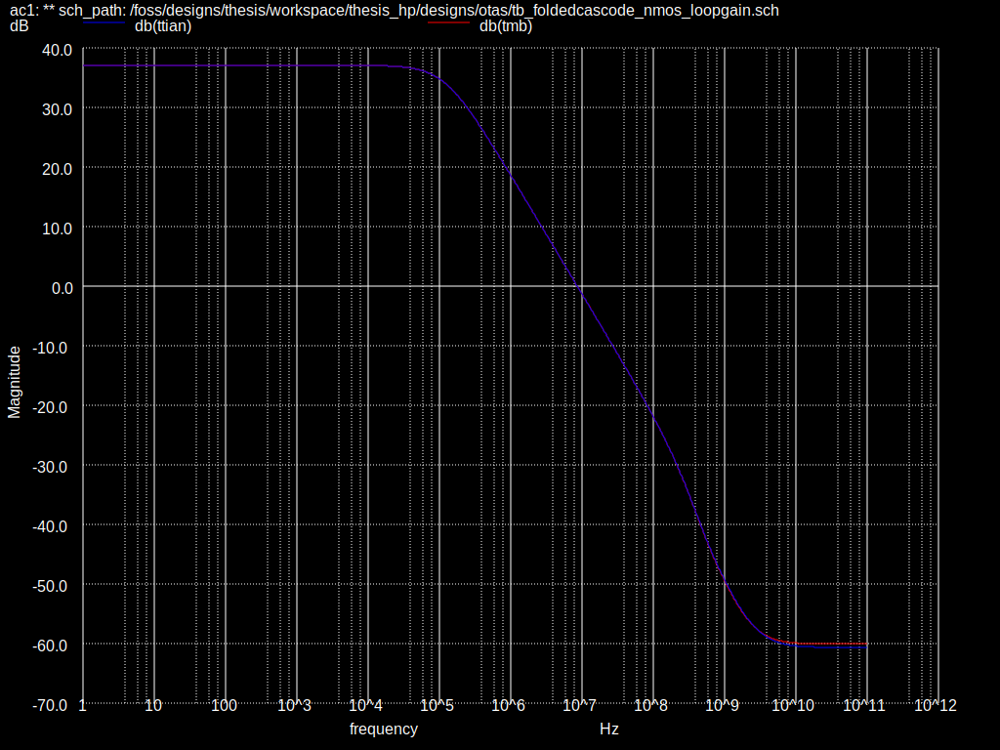
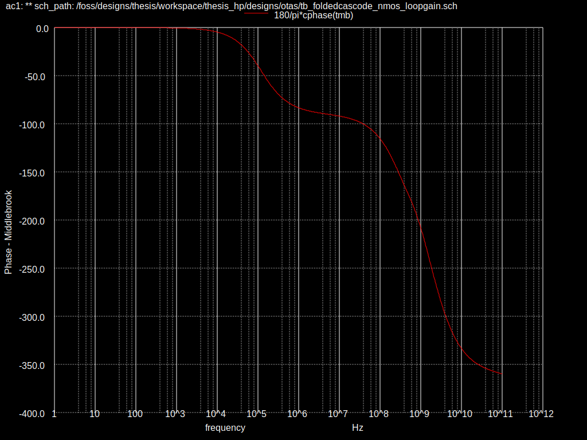

# read table data
from pygmid import Lookup as lk
import numpy as np
lv_nmos = lk('sg13_lv_nmos.mat')
lv_pmos = lk('sg13_lv_pmos.mat')
# list of parameters: VGS, VDS, VSB, L, W, NFING, ID, VT, GM, GMB, GDS, CGG, CGB, CGD, CGS, CDD, CSS, STH, SFL
# if not specified, minimum L, VDS=max(vgs)/2=0.9 and VSB=0 are used 3 Thesis Focus
The focus of our thesis is designing and implementating error amplifier block within the selected buck converter topology using Open Source Tools. This involves developing the block from initial specification and schematic design through to layout, verification (including LVS and PEX), and final tapeout using exclusively open-source tools and IHP-SG13G2 PDK. The goal is to create a high-performance, low-power error amplifier tailored to the requirements of the mixed-signal LED driver IC, ensuring accurate regulation and stability of the control loop. This work will contribute a critical building block to the overall ASIC design while also serving as a case study in open-source analog IC design workflows.
The amplifier is tailored to meet the feedback stability and performance specifications of the LED driver system operating within a 5 V output and 18–36 V input range.
In the section detailing buck converter control design (especially the voltage-mode control loop), [1] focuses on:
A transconductance amplifier used as the error amplifier
High open-loop gain
A clear emphasis on stability, bandwidth, and linear range
In most cases, the paper assumes low voltage domain
The architectures shown are two-stage OTAs or folded cascode for high PSRR
Final Take:
Folded Cascode OTA (see Figure 3.1) is very much aligned with [1] methodology, especially if our focus is on:
A high-gain, linear, feedback-stage amplifier
Working within 1.5V analog domain
Dealing with moderate capacitive loads (e.g. compensation network / VCOMP node)
[1] doesn’t enforce one architecture rigidly, but the characteristics described match folded cascode best.

| Parameter | Target Value |
|---|---|
| Bandwidth | > 1 MHz |
| Phase Margin | > 60° |
| Power Supply | 1.5 V (AVDD) |
| Load Capacitance | ~1-2 pF |
| Power Consumption | < 1 mW |
3.1 Into the design
As shown in the Figure 3.1, \(M_1\) and \(M_2\) are the input differential pair mosfets with \(M_5,_6\) and \(M_7,_8\) as their cascoded mosfets.
ImportantCascode Bias Voltage Generation
It is critically import for a stable performance across PVT that the bias voltages for the cascode gates are created in a manner that tracks variations with process, temperature, and supply voltage!
The current mirror constructed out of \(M_\mathrm{3,7}\) and \(M_\mathrm{4,8}\) is a special kind of cascode current mirror for low-voltage operation, also referred to as high-swing cascode current mirror [2]. This type is very often used, as it forces the \(V_{GS}\) and \(V_{DS}\) of \(M_{3,4}\) to be equal, so the current mirror ratio is independent of \(g_{ds}\).
3.2 Sizing using \(g_{m}\) over \(I_d\) method
In nanometer CMOS, the MOSFET behavior is much more complex than these simple models. Also, this highly simplified derivations introduce concepts like the threshold voltage or the overdrive voltage, which are interesting from a theoretical viewpoint, but bear little practical use. Modern compact MOSFET models (like the PSP model used in SG13G2) use hundreds of parameters and fairly complex equations to somewhat properly describe MOSFET behavior over a wide range of parameters like width, length and temperature. A modern approach to MOSFET sizing is thus based on the thought to use exactly these MOSFET models, characterize them, put the resulting data into tables and charts, and thus learn about the complex MOSFET behavior and use it for MOSFET sizing.
The gm over Id methodology has the huge advantage that it catches MOSFET behavior quite accurately over a wide range of operating conditions, and the curves look very similar for pretty much all CMOS technologies, from micrometer bulk CMOS down to nanometer FinFET devices. Of course the absolute values change, but the method applies universally.
We will be using the pygmid tool which is included in IIC-OSIC-TOOLS and is basically a python version of the gm/Id starter kit from Boris Murmann.
A brief implementation of this method is available here
Following is the python notebook designed for the sizing of Foldedcascode OTA with nmos differential input pair using \(g_{m}\) over \(I_d\) method.
NoteOTA Sizing
3.3 Complete Design and constant \(g_m\) biasing using current mirrors
Based on the sizing procedure in Section 3.2, we are ready with all the \(W/L\) ratios and able to design the complete OTA (see Figure 3.2)

3.3.1 Discussion of the OTA Design
We will now do an analysis of the circuit design of the OTA including all the complications which make this design practical.
For easier navigation, the device identifier are consistent with the circuit sketch in Figure 3.2.
Some MOSFET dimensions are rounded to make a better fit in the IC layout. Please also look carefully at \(W\), \(L\), and \(\mathrm{ng}\). The parameter \(\mathrm{ng}\) defines how the total \(W\) of a MOSFET should be split into individual MOSFET fingers with \(W_\mathrm{f} = W / \mathrm{ng}\). This is done to arrive at a suitably sized MOSFET physical implementation.
As you can (hopefully) see the circuit is carefully drawn to ease readability. Important nets are named, text comments state certain properties like nominal voltage levels, bias currents, etc. Current sensing elements are added to directly see the dc currents in the circuit simulation.
The bias voltage generation for the cascodes is included as well. The voltage drop for the bottom transistors is developed by properly scaling the MOSFETs in the reference branch. We reduce the \(W/L\) ratio to increase the \(V_{GS}\) to create a voltage headroom for the bottom MOSFET.
Sensitive bias nodes are buffered with decoupling capacitors. We are using MOSFETs as nonlinear capacitors, which is not an issue in this application, but we value the increased capacitive density. Please note how the MOSFET are connected (some are tied to \({VDD}\) while others are tied to \(V{SS}\)).
3.4 Simulation of the OTA
Now that circuit is ready we need to test its ac and transient behaviour as well as loop gain using Middlebrook’s method and Tian’s method as mention in Figure 3.3, Figure 3.5, Figure 3.7





The loop gain analysis yeilds the following plots which clarifies that our specifications such as gain and phase margin are met successfully. See Figure 3.8 and Figure 3.9 The plots include both Middlebrook’s and Tian’s method for loop gain.


`¸
3.5 Corner Simulations for PVT and Monte-Carlo
As you have seen in Section 3.4, running simulations by hand is tedious. When we want to check the overall performance, we have to run many simulations over various conditions:
The supply voltage of the circuit has tolerances, and thus we need to check the performance against this variation.
The temperature at which the circuit is operated is likely changing. Also the performance against this has to be verified.
When manufacturing the wafers random variations in various process parameters lead to changed parameters of the integrated circuit components. In order to check for this effect, wafer foundries provide model files which shall cover these manufacturing excursions. Simplified, this leads to a slower or faster MOSFET, and usually NMOS and PMOS are not correlated, so we have the process corners SS, SF, TT, FS, and FF. So far, we have only used the TT models in our simulations.
The variations listed in the previous list are abbreviated as PVT (process, voltage, temperature) variations. In order to finalize a circuit all combinations of these (plus the variations in operating conditions like input voltage) have to be simulated. As you can imagine, this leads to a huge number of simulations, and simulation results which have to be evaluated for pass/fail.
There are two options how to tackle this efficiently:
As an experienced designer you have a very solid understanding of the circuit, plus based on the analytic equations you can identify which combination of operating conditions will lead to a worst case performance. Thus, you can drastically reduce the number of corners to simulate, and you run them by hand.
You are using a framework which highly automates this task of running a plethora of different simulations and evaluating the outcome. These frameworks are called simulation runners.
Luckily, there are open-source versions of simulation runners available, and we will use CACE in this lecture. CACE is written in Python and allows to setup a datasheet in YAML which defines the simulation problem and the performance parameters to evaluate against which limits. The resulting simulations are then run in parallel and the simulation data is evaluated and summarized in various forms.
There is a CACE setup available for our 5T-OTA. The datasheet describes the operating conditions and the simulations tasks. For each simulation a testbench template is needed, this one is used for ac simulations, this one is used for noise simulation, and this one is used for transient simulation.
After a successful run, a documentation is automatically generated. The result of a full run of this is presented below:
NoteCACE Summary for OTA
4 CACE Summary for foldedcascode_nmos
netlist source: schematic
| Parameter | Tool | Result | Min Limit | Min Value | Typ Target | Typ Value | Max Limit | Max Value | Status |
|---|---|---|---|---|---|---|---|---|---|
| Output voltage ratio | ngspice | gain | 0.98 V/V | 0.996 V/V | any | 0.999 V/V | 1.1 V/V | 1.000 V/V | Pass ✅ |
| Bandwidth | ngspice | bw | 1e6 Hz | 5118320.000 Hz | any | 7827360.000 Hz | any | 13271000.000 Hz | Pass ✅ |
| Output voltage ratio (MC) | ngspice | gain_mc | any | 0.671 V/V | any | 0.996 V/V | any | 1.502 V/V | Pass ✅ |
| Bandwidth (MC) | ngspice | bw_mc | 1e6 Hz | 1024950.000 Hz | any | 7454465.000 Hz | any | 91913200.000 Hz | Pass ✅ |
| Output noise | ngspice | noise | any | 0.069 mV | any | 0.101 mV | 0.2 mV | 0.134 mV | Pass ✅ |
| Settling time | ngspice | tsettle | any | 0.259 us | any | 0.287 us | 1.5 us | 0.320 us | Pass ✅ |
The situation with the design is summarized in Table 4.1.
| Specification | OTA | Unit |
|---|---|---|
| Output voltage error | \(<1\) | % |
| Total output noise (rms) | \(<0.15\) | mVrms |
| Supply current (as low as possible) | \(<14\) | µA |
| Turn-on time | \(<0.4\) | µs |
| Externally provided bias current (nominal) | \(12.5\) | µA |